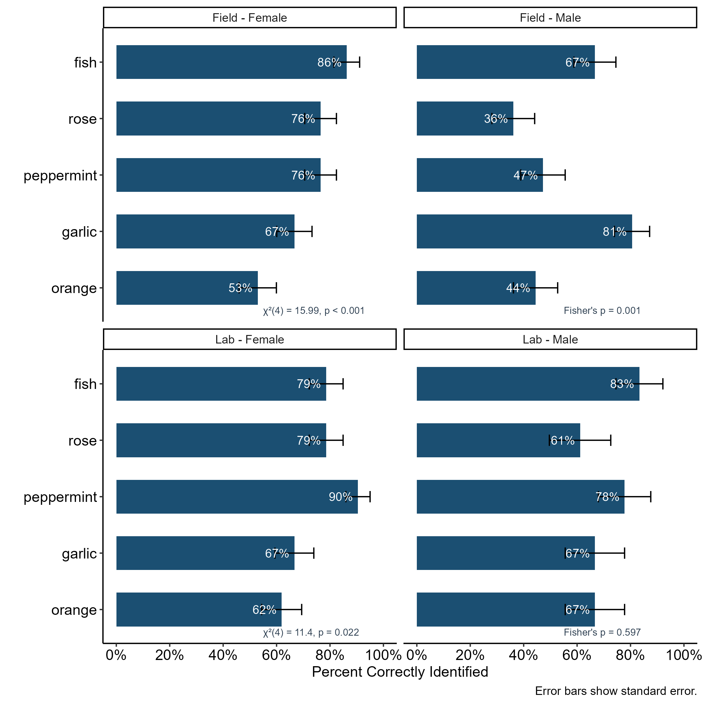
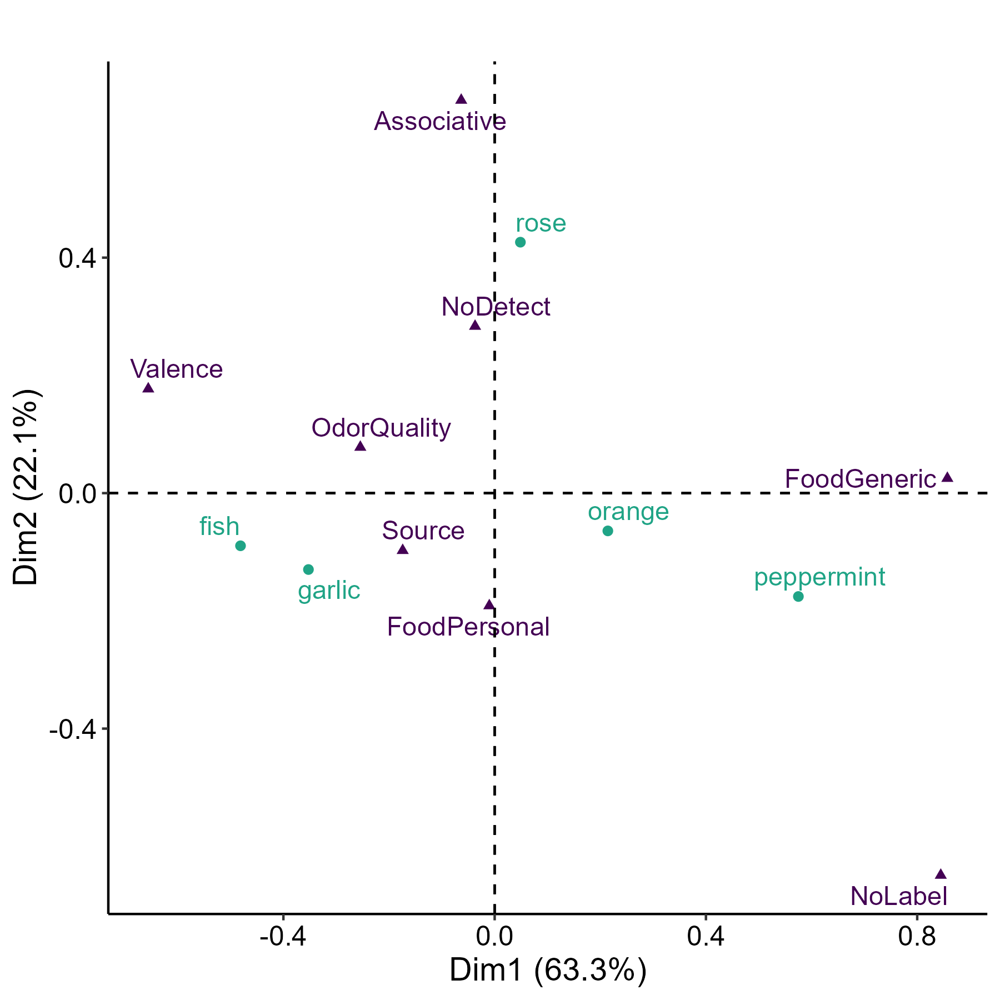
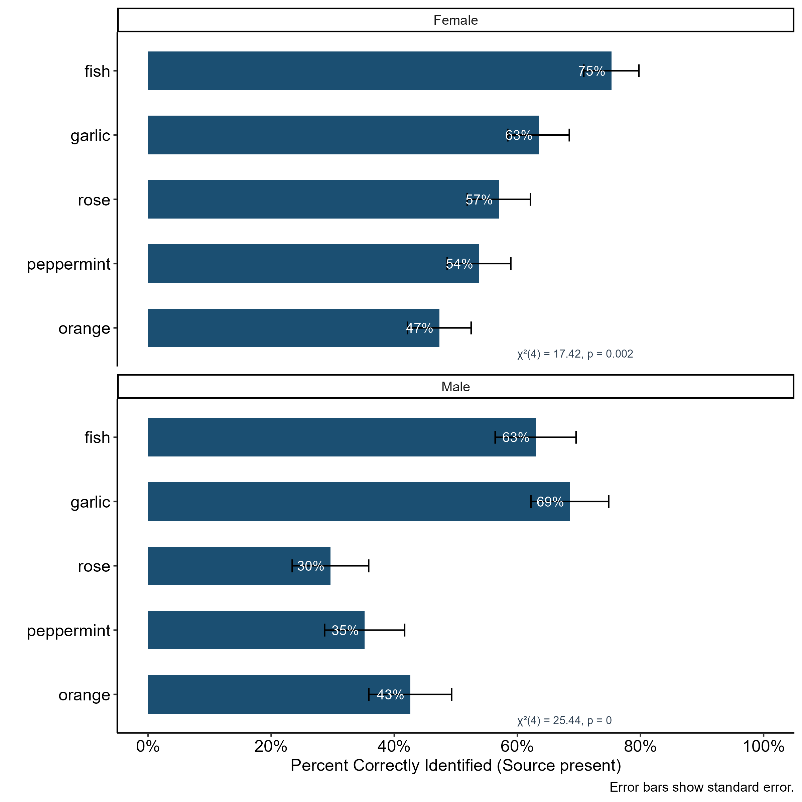
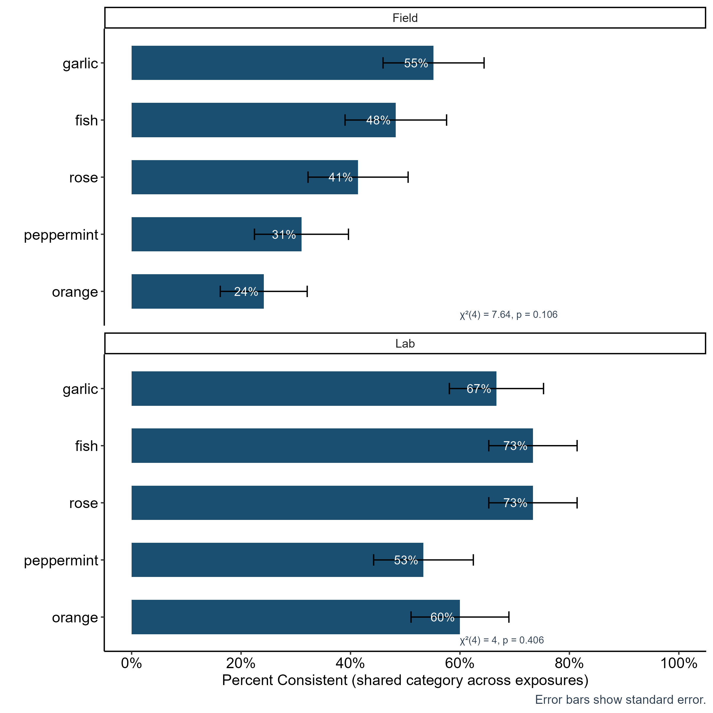
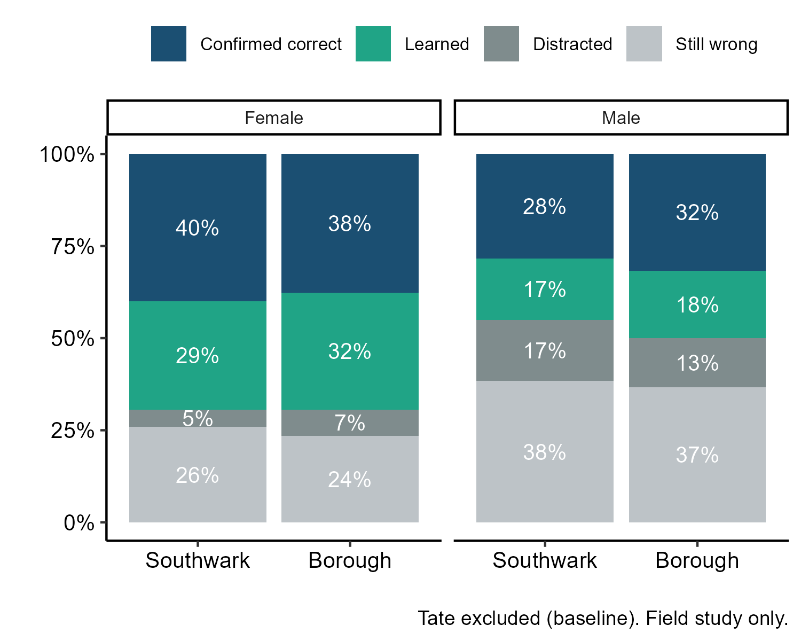
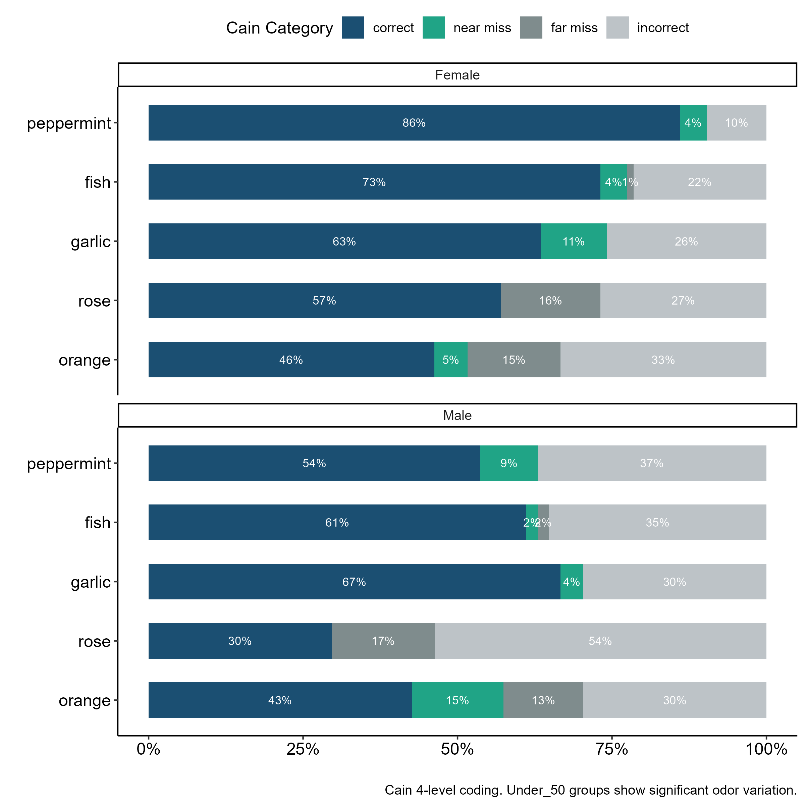

Odor Identification in Real-World Environments
Executive Summary
Problem: Humans encounter odors in complex, multi-sensory environments – markets, streets, polluted air – yet olfactory research almost exclusively measures ability in controlled lab settings. Whether ambient odor context enhances or impairs identification, and whether lab performance predicts field performance, remains poorly understood. A key open question is whether environmental odor exposure (pollution, food smells) primes or disrupts olfactory ability in real-world settings.
Approach: This project tests odor identification and verbal description across three London field locations with distinct ambient odor profiles – a neutral art museum, a polluted urban street, and a food market – and a paired controlled lab study replicating clean and food-rich conditions. Fifty-nine participants completed both forced choice identification and free verbal description of five odors at each location, allowing comparison of accuracy, consistency, and response change across settings. Sex and age effects were modeled before testing location effects, and multiple analytical frameworks were applied to assess robustness.
Insights: The null result is an artifact of study design – repeated exposure within a single session confounds learning with environment. Field olfactory research needs counterbalanced designs, careful odor selection, and tasks sensitive enough to detect real-world variation. Odor identity shaped verbal description more than location did, with some odors consistently pulling toward direct naming and others toward personal or categorical associations. The analytical extensions here – correspondence analysis, Cain four-level coding, direction tracking – provide a more sensitive and reproducible toolkit for future work than the original diagnostic metric.
Significance: Olfaction is the only sense with direct neural connections to memory and language centers, yet we know almost nothing about how it functions in the environments where people actually use it. Understanding real-world olfactory ability has implications for everything from environmental health to clinical assessment of olfactory decline. The design and analytical lessons from this reanalysis bring that goal closer – a counterbalanced field protocol using the toolkit developed here could finally isolate whether environment shapes what we smell.
Key Findings
- Data patterns confirm learning across trials, not environmental effect
- Odors have different semantic profiles: some pull toward direct naming, others toward categorical or personal associations
- Cain method captures age effects that binary scoring misses but converges to the same substantive conclusions
- Sex differences replicate established patterns – females outperform males across tasks and settings – justifying the split analysis throughout
Hoover, K.C. (2020). Field-testing olfactory ability to understand human olfactory ecology. American Journal of Human Biology, 32(5), e23411. DOI: 10.1002/ajhb.23411
Research Questions
- Does olfactory identification accuracy vary by odor, or does accuracy of prior odor identification generalize to odor prediction? (accuracy/identification)
- Are people consistent in their odor descriptions across repeated exposures? (consistency)
- Does olfactory ability vary across locations relative to pollution or food smells? (olfactory ability)
Research Answers
Forced Choice: Identification Accuracy
Age and sex are known effects on olfactory ability that might mask environmental effects. The differences between studies (different cohorts with different demographic profiles, different conditions) may have a significant effect as well. Preliminary binomial GLMs confirmed sex and study context significantly predict accuracy (Sex OR=0.58, p=0.001; Study OR=1.45, p=0.028). Analysis is split by Study and Sex throughout.
Identification rates varied significantly by odor in three of four groups:
- Field females: chi2(4)=16, p=0.003
- Field males: Fisher’s p=0.0006
- Lab females: chi2(4)=11, p=0.022
- Lab males: non-significant (n=9, low power)
Figure 1. Percent correctly identified by odor, faceted by Study x Sex. Fish was most reliably identified; orange was most difficult. Odor order based on field female accuracy (low to high).

Interpretation: Odor identity – not location – drives accuracy variation. The ordering is consistent across groups, suggesting a shared perceptual or semantic difficulty gradient across the five stimuli.
Forced Choice: Consistency
Consistency (using the same label every exposure) varied significantly only for field females (chi2(4)=18, p=0.001). Intraclass correlation confirmed odors are independent – people consistent on one odor are not necessarily consistent on another – justifying per-odor analysis.
Forced Choice: Direction of Change
Rather than comparing means, individual responses were tracked from Tate baseline:
Figure 2. Direction of response change from Tate (field study only). Females maintained correct identifications more reliably; males showed more distraction and persistent errors. Both sexes flat between Southwark and Borough – consistent with learning at first non-Tate exposure rather than an environment-specific effect.

Interpretation: The flat Southwark-to-Borough pattern is the key diagnostic. If the food-rich Borough Market environment were driving improvement, accuracy would rise at Borough specifically. Instead, improvement happens at the first non-Tate location regardless of its odor profile – the signature of learning, not environmental priming.
Forced Choice: Olfactory Ability by Location
No significant location effects emerged in forced choice olfactory ability scores (all p > 0.16).
Forced Choice: Olfactory Ability-Consistency Correlation
Higher olfactory ability was associated with more consistent descriptions (pooled Kendall’s tau=0.70, p<0.001). This held for all groups except field males (tau=0.38, p=0.12), whose olfactory ability and consistency decoupled – matching their higher distraction and error rates.
Free Choice: Coding Scheme
Free-choice verbal responses (735 total) were coded into eight categories:
| Category | Definition | Example |
|---|---|---|
| Source | Correct identification | “fish”, “garlic” |
| FoodGeneric | Taxonomic/botanical family | “citrus”, “mint” |
| FoodPersonal | Cultural food association | “Thai food”, “chips” |
| OdorQuality | Sensory descriptor | “sweet”, “pungent” |
| Associative | Product/place | “perfume”, “garden” |
| Valence | Affective | “unpleasant”, “nice” |
| NoLabel | Detected but unnamed | “something…” |
| NoDetect | Not detected | – |
35% of responses contained multiple codes (e.g., Source+FoodPersonal). Key decision: Source-present = correct, regardless of additional codes.
Free Choice: Correspondence Analysis
CA on Odor x Code contingency table reveals the semantic structure across stimuli and provides insights into cognitive processing variation relative to specific odors:
Figure 3. CA biplot (Dim1=63.3%, Dim2=22.1%). Dim1 separates easily-named odors (fish, garlic – Source-dominant) from category-level responses (peppermint, orange – FoodGeneric, NoLabel). Dim2 separates personal/associative (rose) from food-context (fish, garlic).

Interpretation: The CA biplot maps the semantic distance between odors as experienced in language. Fish and garlic anchor the Source end because they name themselves – there is no higher-order category to retreat to. Rose anchors the Associative dimension because it is rarely encountered as a food and instead activates product and memory associations.
Odor stories:
- Fish – directly named; no FoodGeneric because fish is the generic
- Garlic – Source + FoodPersonal (Thai cuisine, savory cooking)
- Orange – most semantically diverse (citrus family + food memories compete)
- Peppermint – menthol family confusion (mint, spearmint, wintergreen)
- Rose – most Associative (personal products, gardens); highest NoDetect
Free Choice: Accuracy
Both sexes showed significant odor variation (females chi2=17.4, p=0.002; males chi2=25.4, p<0.001):
Figure 4. Free-choice accuracy (Source present) by sex. Females more uniform (47–75%); males wider spread (30–69%). Sex difference especially pronounced for rose – males rarely used Source language, consistent with rose’s high Associative loading.

Interpretation: The sex gap is widest for rose, the most associatively loaded odor. This suggests males and females differ not just in detection ability but in the semantic frames they apply – males are more likely to describe rose in terms of products or places rather than the flower itself.
Free Choice: Consistency
Free-choice consistency (sharing >=1 code category across all exposures) showed no significant odor variation (field chi2=7.6, p=0.11; lab chi2=4.0, p=0.41). Lab participants were more consistent overall (53–73% vs field 24–55%), matching the significant Study effect in the preliminary GLM.
Figure 5. Free-choice consistency by Study. Lab’s controlled environment produces more consistent language regardless of odor. Orange hardest to be consistent about in field, matching its diverse CA profile.

Interpretation: Lab consistency advantage reflects reduced cognitive load – no ambient odors competing for attention, no changing scenery between trials. Orange’s field inconsistency tracks its CA position as the most semantically diffuse stimulus.
Free Choice: Olfactory Ability by Location
Field females showed significant improvement at both Southwark and Borough (OR=2.81 for both, p=0.001). Identical ORs indicate improvement happened at first non-Tate exposure with no further change at Borough despite the food-rich environment – learning, not environmental effects.
Lab and field males showed no significant location effects.
Free Choice: Direction of Change
Figure 6. Free-choice direction analysis (field only). Compared to forced choice, females show more Learned responses and less Confirmed correct. Open responses allow more movement toward Source language. Males higher Still wrong – the forced-choice list guides males more than open description does.

Interpretation: The forced-choice list acts as a scaffold for males – when constrained to select from options, they perform closer to females. Remove the scaffold and the gap widens. This has implications for task design in field olfactory research: open description may underestimate male olfactory ability if verbal retrieval rather than detection is the limiting factor.
Free Choice: Olfactory Ability-Consistency Correlation
Weaker in free choice (tau=0.38, p=0.0001) than forced (tau=0.70). Only lab females significant (tau=0.41, p=0.021). Free choice decouples the two measures because open responses allow consistently wrong or inconsistently correct patterns impossible in forced choice.
Cain Analysis: Four-Level Coding
To test whether Cain’s four-level coding (correct, near miss, far miss, incorrect) provides additional sensitivity beyond binary Source-present, free choice data were reanalyzed using the standard olfaction research grading scheme.
Preliminary multinomial GLM showed age significant with Cain coding but not with binary Source – suggesting four-level granularity better detects age-related performance differences (older adults making more near/far miss errors rather than outright incorrect responses).
Figure 7. Cain four-level distribution by Sex x Odor. Stacked bars show progression from correct (bottom, dark blue) through near miss and far miss to incorrect (top, light gray).

Interpretation: The near/far miss categories capture the gradation between knowing an odor family and naming it correctly – a distinction binary scoring collapses. Older adults cluster in the near miss band, confirming that binary coding underestimates their partial knowledge.
Weighted olfactory ability (correct=1, near miss=0.67, far miss=0.33, incorrect=0) replicated binary findings exactly: field females improve at Southwark and Borough with identical ORs (2.17 and 2.03, both p < 0.02). Both sexes flat Southwark to Borough.
What Cain added: captured age as significant (binary missed this); more nuanced odor-level variation; better demographic sensitivity.
What stayed the same: odor variation significant for both sexes; field females improve at first non-Tate exposure; learning pattern dominates.
Next Steps
The central failure of both the original study and this reanalysis is the learning effect – repeated exposure to odors at the same testing session prevented a clean test of whether environmental odor context alters olfactory ability. Retesting is recommended with the following protocol changes:
- Repeated measures design: Test participants at different locations on different days to separate learning from environmental effects
- Odor selection: Choose odors carefully and consistently across repeated measures; some odors show far greater semantic variability than others, which complicates comparison
- Task choice: The five-odor test is a useful quick diagnostic but may not be robust enough for field conditions; a rapid discrimination test may perform better
- Verbal report: Free choice with Cain coding should be retained – it captures age effects and provides richer data on odor-concept mapping than forced choice alone
The literature supports both the influence of ambient pollution on olfactory ability and the finding that odor identification is more strongly tied to verbal ability than olfactory ability per se. A redesigned protocol combining a discrimination task, counterbalanced location order, and free-choice verbal description would more cleanly test the environmental hypothesis.
Study Design
This page extends the published findings using different analytical approaches to test whether conclusions hold under alternative metrics: binary rather than diagnostic olfactory ability scoring; correspondence analysis with a reproducible workflow; free-choice verbal description analysis (not in paper); Cain four-level coding comparison; and direction analysis tracking individual response changes across locations.
Data Source: Published field and lab study data; London, UK, 2009–2010.
Data Handling: 59 participants total (29 field, 30 lab); responses coded into forced choice binary accuracy and free choice eight-category scheme; 35% of free choice responses multi-coded; Cain four-level coding applied post-hoc with 100% inter-rater agreement; age groups split at 50 due to small n in older cohorts.
Analytical Approach:
- Preliminary GLMs – Sex + Age + Study to justify all subsequent split decisions
- Forced choice – chi-square/Fisher’s exact for odor-level variation; ICC for odor independence; quasibinomial GLMs for olfactory ability by location; Kendall’s tau for olfactory ability-consistency correlation; direction analysis tracking individual response changes from Tate baseline
- Free choice binary – correspondence analysis on Odor x Code table; accuracy, consistency, olfactory ability by location, direction, correlation
- Free choice Cain – multinomial logistic regression for four-level accuracy; weighted olfactory ability by location; direction analysis
Project Resources
Repository: github.com/kchoover14/smelling-in-the-wild
Data: Published field and lab study data collected in London, UK, 2009–2010. Raw and cleaned data files included in repository.
data-raw data.xlsx– original raw datadata-forced.csv– cleaned forced choice datadata-free.csv– cleaned free choice datadata-cain.xlsx– Cain four-level coded responsesdata-kappa.xlsx– inter-rater reliability datalookup-free-codes-final.csv– free choice coding lookup (250 terms x odors)
Code:
script-revised-clean.R– import, anonymize, create UIDs, long formatscript-revised-forced.R– forced choice: accuracy, consistency, olfactory ability, direction, correlationscript-revised-free-binary.R– free choice binary: CA, accuracy, consistency, olfactory ability, direction, correlationscript-revised-free-cain.R– free choice Cain: multinomial accuracy, weighted olfactory ability, direction
Project Artifacts (for revised analysis only):
- Figures (n=7)
Environment:
renv.lockandrenv/– restore withrenv::restore()
License:
- Code and scripts © Kara C. Hoover, licensed under the MIT License.
- Data, figures, and written content © Kara C. Hoover, licensed under CC BY-NC-ND 4.0.
Tools & Technologies
Languages: R
Tools: None
Packages: readxl | dplyr | tidyr | stringr | broom | ggplot2 | scales | irr | skimr | FactoMineR | factoextra | nnet | car | tibble
Expertise
Domain Expertise: olfactory ecology | field methods | psychophysics | mixed methods | correspondence analysis | reproducible research
Transferable Expertise: Designing field studies that test real-world behavior rather than lab proxies; applying multiple analytical frameworks to assess robustness of findings; building reproducible workflows that extend and modernize published research.